Статистика обращений к innoedusys.uz
Статистика обращений к innoedusys.uz
Программа стартовала в вс. 31 мая 2026 18:01.
Анализ обращений к серверу с пн. 9 фев 2026 18:20 по вс. 31 мая 2026 17:08 (110,95 дней).
Статистика обращений к innoedusys.uzПрограмма стартовала в вс. 31 мая 2026 18:01.
Анализ обращений к серверу с пн. 9 фев 2026 18:20 по вс. 31 мая 2026 17:08 (110,95 дней).
(Переход: Вверх | Основная Информация | Статистика по месяцам | Статистика по дням недели | Статистика по времени суток | Статистика по доменам | Статистика по организациям | Статистика по перенаправляющим ссылкам | Статистика отказов по ссылкам | Статистика по ссылающимся сайтам | Статистика по браузерам (подробная) | Статистика по браузерам (суммарная) | Статистика по операционным системам | Статистика по коду возврата | Статистика по размерам файлов | Статистика по типам файлов | Статистика по директориям | Статистика по запросам)
Запись в круглых скобках - данные за 7 дней до 31 мая 2026 18:01.
Успешных обращений: 24 826 (1 631)
Среднее кол. успешных обращений в день: 223 (232)
Успешных обращений к страницам: 593 (11)
Среднее кол. успешных обращений к страницам в день: 5 (1)
Неуспешных запросов: 4 450 (11)
Перенаправленных запросов: 8 006 (70)
Количество запрошенных файлов: 404 (969)
Количество обслуженных хостов: 723 (1 073)
Данных передано: 5,67 гигабайт (25,59 мегабайт)
Среднее кол. переданных данных в день: 52,34 мегабайт (3,66 мегабайт)
(Переход: Вверх | Основная Информация | Статистика по месяцам | Статистика по дням недели | Статистика по времени суток | Статистика по доменам | Статистика по организациям | Статистика по перенаправляющим ссылкам | Статистика отказов по ссылкам | Статистика по ссылающимся сайтам | Статистика по браузерам (подробная) | Статистика по браузерам (суммарная) | Статистика по операционным системам | Статистика по коду возврата | Статистика по размерам файлов | Статистика по типам файлов | Статистика по директориям | Статистика по запросам)
Каждый символ ( ) отображает 6 обращений к страницам или около этого.
) отображает 6 обращений к страницам или около этого.
| месяц | запросы | страниц | |
|---|---|---|---|
| фев 2026 | 4161 | 218 |   |
| мар 2026 | 6497 | 76 |  |
| апр 2026 | 6442 | 172 |  |
| мая 2026 | 7726 | 127 |  |
Наибольшее количество обращений в фев 2026 (218 обращений к страницам).
(Переход: Вверх | Основная Информация | Статистика по месяцам | Статистика по дням недели | Статистика по времени суток | Статистика по доменам | Статистика по организациям | Статистика по перенаправляющим ссылкам | Статистика отказов по ссылкам | Статистика по ссылающимся сайтам | Статистика по браузерам (подробная) | Статистика по браузерам (суммарная) | Статистика по операционным системам | Статистика по коду возврата | Статистика по размерам файлов | Статистика по типам файлов | Статистика по директориям | Статистика по запросам)
Каждый символ () отображает 4 обращений к страницам или около этого.
| день | запросы | страниц | |
|---|---|---|---|
| вс. | 4151 | 90 | |
| пн. | 3598 | 132 | |
| вт. | 3646 | 93 | |
| ср. | 3674 | 67 | |
| чт. | 3228 | 91 | |
| пт. | 3162 | 54 | |
| сб. | 3367 | 66 | |
(Переход: Вверх | Основная Информация | Статистика по месяцам | Статистика по дням недели | Статистика по времени суток | Статистика по доменам | Статистика по организациям | Статистика по перенаправляющим ссылкам | Статистика отказов по ссылкам | Статистика по ссылающимся сайтам | Статистика по браузерам (подробная) | Статистика по браузерам (суммарная) | Статистика по операционным системам | Статистика по коду возврата | Статистика по размерам файлов | Статистика по типам файлов | Статистика по директориям | Статистика по запросам)
Каждый символ () отображает 2 обращений к страницам или около этого.
| час | запросы | страниц | |
|---|---|---|---|
| 0 | 1108 | 18 | |
| 1 | 867 | 8 | |
| 2 | 911 | 17 | |
| 3 | 849 | 8 | |
| 4 | 864 | 8 | |
| 5 | 925 | 8 | |
| 6 | 954 | 4 | |
| 7 | 932 | 8 | |
| 8 | 963 | 55 | |
| 9 | 1101 | 31 | |
| 10 | 1000 | 12 | |
| 11 | 1214 | 22 | |
| 12 | 971 | 25 | |
| 13 | 949 | 21 | |
| 14 | 1044 | 47 | |
| 15 | 1362 | 35 | |
| 16 | 1145 | 36 | |
| 17 | 1034 | 24 | |
| 18 | 984 | 13 | |
| 19 | 1260 | 65 | |
| 20 | 1249 | 63 | |
| 21 | 1244 | 26 | |
| 22 | 1033 | 23 | |
| 23 | 863 | 16 | |
(Переход: Вверх | Основная Информация | Статистика по месяцам | Статистика по дням недели | Статистика по времени суток | Статистика по доменам | Статистика по организациям | Статистика по перенаправляющим ссылкам | Статистика отказов по ссылкам | Статистика по ссылающимся сайтам | Статистика по браузерам (подробная) | Статистика по браузерам (суммарная) | Статистика по операционным системам | Статистика по коду возврата | Статистика по размерам файлов | Статистика по типам файлов | Статистика по директориям | Статистика по запросам)
Список доменов, отсортировано по суммарному трафику.
| запросы | %байт | домен |
|---|---|---|
| 24826 | 100% | [нераспознанный IP-адрес] |
(Переход: Вверх | Основная Информация | Статистика по месяцам | Статистика по дням недели | Статистика по времени суток | Статистика по доменам | Статистика по организациям | Статистика по перенаправляющим ссылкам | Статистика отказов по ссылкам | Статистика по ссылающимся сайтам | Статистика по браузерам (подробная) | Статистика по браузерам (суммарная) | Статистика по операционным системам | Статистика по коду возврата | Статистика по размерам файлов | Статистика по типам файлов | Статистика по директориям | Статистика по запросам)
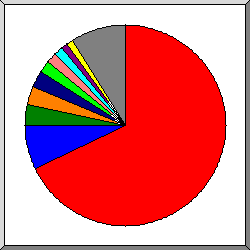
Поделено на сектора по количеству обращений.
 45
45
 5
5
 94
94
 84
84
 195.158
195.158
 155.133
155.133
 95
95
 66.249
66.249
 другое
другое
Показано первые 20 организаций - по количеству обращений, отсортировано по количеству обращений.
| запросы | %байт | организация |
|---|---|---|
| 17481 | 4,22% | 45 |
| 1691 | 0,32% | 5 |
| 917 | 50,47% | 94 |
| 644 | 0,11% | 84 |
| 613 | 14,10% | 195.158 |
| 393 | 0,07% | 155.133 |
| 329 | 19,14% | 95 |
| 253 | 0,04% | 66.249 |
| 200 | 0,04% | 2 |
| 182 | 0,03% | 93 |
| 170 | 216.73 | |
| 154 | 0,03% | 34 |
| 122 | 11,13% | 37 |
| 109 | 0,03% | 46 |
| 93 | 0,02% | 3 |
| 85 | 0,02% | 163.7 |
| 82 | 0,02% | 103 |
| 75 | 0,01% | 104 |
| 58 | 0,01% | 35 |
| 51 | 0,01% | 54 |
| 1124 | 0,19% | [не распознано: 162 организаций] |
(Переход: Вверх | Основная Информация | Статистика по месяцам | Статистика по дням недели | Статистика по времени суток | Статистика по доменам | Статистика по организациям | Статистика по перенаправляющим ссылкам | Статистика отказов по ссылкам | Статистика по ссылающимся сайтам | Статистика по браузерам (подробная) | Статистика по браузерам (суммарная) | Статистика по операционным системам | Статистика по коду возврата | Статистика по размерам файлов | Статистика по типам файлов | Статистика по директориям | Статистика по запросам)
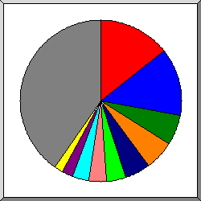
Поделено на сектора количество перенаправленных запросов.
https://innoedusys.uz/login
https://innoedusys.uz/
https://innoedusys.uz/home
https://innoedusys.uz/oraliq-nazorat/create
https://www.google.com/
https://innoedusys.uz/yakuniy-nazorat/questions
https://innoedusys.uz/resources
https://innoedusys.uz/cgi-sys/suspendedpage.cgi
 https://innoedusys.uz/home/26
https://innoedusys.uz/home/26
 https://innoedusys.uz/home/25
другое
https://innoedusys.uz/home/25
другое
Показано первые 30 ссылающихся URLей - количество перенаправленных запросов, отсортировано количество перенаправленных запросов.
(Переход: Вверх | Основная Информация | Статистика по месяцам | Статистика по дням недели | Статистика по времени суток | Статистика по доменам | Статистика по организациям | Статистика по перенаправляющим ссылкам | Статистика отказов по ссылкам | Статистика по ссылающимся сайтам | Статистика по браузерам (подробная) | Статистика по браузерам (суммарная) | Статистика по операционным системам | Статистика по коду возврата | Статистика по размерам файлов | Статистика по типам файлов | Статистика по директориям | Статистика по запросам)
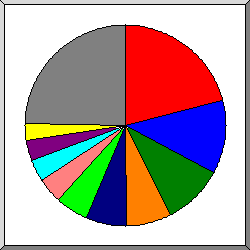
Поделено на сектора по количеству отказов.
https://innoedusys.uz/
https://panel2.eskiz.uz:2083/
https://innoedusys.uz/login
https://innoedusys.uz/home/create
https://innoedusys.uz/home
https://mail.innoedusys.uz/
https://webmail.innoedusys.uz/z0f76a1d14fd21a8fb5fd0d03e0fdc3d3cedae52f
https://innoedusys.uz/home/24
https://www.google.com/
https://www.innoedusys.uz/
другое
Показано первые 30 ссылающихся URLs - по количеству отказов, отсортировано по количеству отказов.
(Переход: Вверх | Основная Информация | Статистика по месяцам | Статистика по дням недели | Статистика по времени суток | Статистика по доменам | Статистика по организациям | Статистика по перенаправляющим ссылкам | Статистика отказов по ссылкам | Статистика по ссылающимся сайтам | Статистика по браузерам (подробная) | Статистика по браузерам (суммарная) | Статистика по операционным системам | Статистика по коду возврата | Статистика по размерам файлов | Статистика по типам файлов | Статистика по директориям | Статистика по запросам)
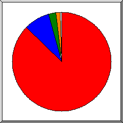
Поделено на сектора по количеству обращений.
https://innoedusys.uz/
https://webmail.innoedusys.uz/
https://www.innoedusys.uz/
https://mail.innoedusys.uz/
другое
Список ссылающихся сайтов, отсортировано по количеству обращений.
| запросы | сайт |
|---|---|
| 14285 | https://innoedusys.uz/ |
| 1192 | https://webmail.innoedusys.uz/ |
| 211 | https://www.innoedusys.uz/ |
| 194 | https://mail.innoedusys.uz/ |
| 38 | https://www.google.com/ |
| 17 | http://webmail.innoedusys.uz/ |
| 3 | https://panel2.eskiz.uz:2083/ |
| 1 | https://bing.com/ |
| 1 | https://panel2.eskiz.uz:2087/ |
| 1 | https://www.bing.com/ |
| 1 | https://uz.all-url.info/ |
| 1 | https://duckduckgo.com/ |
(Переход: Вверх | Основная Информация | Статистика по месяцам | Статистика по дням недели | Статистика по времени суток | Статистика по доменам | Статистика по организациям | Статистика по перенаправляющим ссылкам | Статистика отказов по ссылкам | Статистика по ссылающимся сайтам | Статистика по браузерам (подробная) | Статистика по браузерам (суммарная) | Статистика по операционным системам | Статистика по коду возврата | Статистика по размерам файлов | Статистика по типам файлов | Статистика по директориям | Статистика по запросам)
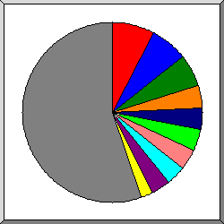
Поделено на сектора по количеству обращений к странице.
Mozilla/5.0 (Windows NT 10.0; Win64; x64) AppleWebKit/537.36 (KHTML, like Gecko) Chrome/147.0.0.0 Safari/537.36
Mozilla/5.0 (Windows NT 10.0; Win64; x64) AppleWebKit/537.36 (KHTML, like Gecko) Chrome/144.0.0.0 Safari/537.36
Mozilla/5.0 (l9scan/2.0.43e2935313e2833313e25343; +https://leakix.net)
Mozilla/5.0 (Linux; Android 10; K) AppleWebKit/537.36 (KHTML, like Gecko) Chrome/147.0.0.0 Mobile Safari/537.36
{USER_AGENT}
Mozilla/5.0 (Windows NT 10.0; Win64; x64) AppleWebKit/537.36 (KHTML, like Gecko) Chrome/145.0.0.0 Safari/537.36
Mozilla/5.0 (Windows NT 10.0; Win64; x64) AppleWebKit/537.36 (KHTML, like Gecko) Chrome/146.0.0.0 Safari/537.36
Mozilla/5.0
Hello from Palo Alto Networks, find out more about our scans in https://docs-cortex.paloaltonetworks.com/r/1/Cortex-Xpanse/Scanning-activity
Mozilla/5.0 (Windows NT 10.0; Win64; x64; rv:125.0) Gecko/20100101 Firefox/125.0
другое
Показано первые 40 браузеров - по количеству обращений к странице, отсортировано по количеству обращений к странице.
| запросы | страниц | браузер |
|---|---|---|
| 726 | 58 | Mozilla/5.0 (Windows NT 10.0; Win64; x64) AppleWebKit/537.36 (KHTML, like Gecko) Chrome/147.0.0.0 Safari/537.36 |
| 474 | 42 | Mozilla/5.0 (Windows NT 10.0; Win64; x64) AppleWebKit/537.36 (KHTML, like Gecko) Chrome/144.0.0.0 Safari/537.36 |
| 144 | 34 | Mozilla/5.0 (l9scan/2.0.43e2935313e2833313e25343; +https://leakix.net) |
| 111 | 30 | Mozilla/5.0 (Linux; Android 10; K) AppleWebKit/537.36 (KHTML, like Gecko) Chrome/147.0.0.0 Mobile Safari/537.36 |
| 26 | 26 | {USER_AGENT} |
| 162 | 26 | Mozilla/5.0 (Windows NT 10.0; Win64; x64) AppleWebKit/537.36 (KHTML, like Gecko) Chrome/145.0.0.0 Safari/537.36 |
| 141 | 26 | Mozilla/5.0 (Windows NT 10.0; Win64; x64) AppleWebKit/537.36 (KHTML, like Gecko) Chrome/146.0.0.0 Safari/537.36 |
| 24 | 22 | Mozilla/5.0 |
| 47 | 19 | Hello from Palo Alto Networks, find out more about our scans in https://docs-cortex.paloaltonetworks.com/r/1/Cortex-Xpanse/Scanning-activity |
| 18 | 14 | Mozilla/5.0 (Windows NT 10.0; Win64; x64; rv:125.0) Gecko/20100101 Firefox/125.0 |
| 46 | 10 | Mozilla/5.0 (Windows NT 10.0; Win64; x64) AppleWebKit/537.36 (KHTML, like Gecko) Chrome/141.0.0.0 Safari/537.36 |
| 239 | 10 | Mozilla/5.0 (Windows NT 10.0; Win64; x64; rv:150.0) Gecko/20100101 Firefox/150.0 |
| 58 | 9 | Mozilla/5.0 (Linux; Android 10; K) AppleWebKit/537.36 (KHTML, like Gecko) Chrome/144.0.0.0 Mobile Safari/537.36 |
| 62 | 9 | Mozilla/5.0 (X11; Linux x86_64) AppleWebKit/537.36 (KHTML, like Gecko) Chrome/142.0.0.0 Safari/537.36 |
| 19 | 9 | Mozilla/5.0 (X11; Linux i686; rv:109.0) Gecko/20100101 Firefox/120.0 |
| 26 | 7 | Mozilla/5.0 (Linux; Android 6.0; Nexus 5 Build/MRA58N) AppleWebKit/537.36 (KHTML, like Gecko) Chrome/130.0.0.0 Mobile Safari/537.36 |
| 20 | 7 | Mozilla/5.0 (Windows NT 10.0; Win64; x64) AppleWebKit/537.36 (KHTML, like Gecko) Chrome/116.0.0.0 Safari/537.36 |
| 18 | 6 | Mozilla/5.0 (Macintosh; Intel Mac OS X 10_15_7) AppleWebKit/537.36 |
| 14 | 6 | Scrapy/2.13.4 (+https://scrapy.org) |
| 53 | 5 | okhttp/5.3.0 |
| 5 | 5 | Mozilla/5.0 (compatible; NetcraftSurveyAgent/1.0; +info@netcraft.com) |
| 31 | 5 | Mozilla/5.0 (Windows NT 10.0; Win64; x64; rv:147.0) Gecko/20100101 Firefox/147.0 |
| 10 | 5 | Mozilla/5.0 (X11; Linux x86_64) AppleWebKit/537.36 (KHTML, like Gecko) Chrome/131.0.0.0 Safari/537.36 |
| 9 | 5 | visionheight.com/scan Mozilla/5.0 (Macintosh; Intel Mac OS X 10_15_7) Chrome/126.0.0.0 Safari/537.36 |
| 8 | 5 | Mozilla/5.0 (Windows NT 10.0) AppleWebKit/537.36 (KHTML, like Gecko) Chrome/106.0.0.0 Safari/537.36 |
| 19 | 5 | Mozilla/5.0 (X11; Linux x86_64; rv:142.0) Gecko/20100101 Firefox/142.0 |
| 166 | 5 | Mozilla/5.0 (X11; Linux x86_64) AppleWebKit/537.36 (KHTML, like Gecko) HeadlessChrome/138.0.7204.23 Safari/537.36 |
| 23 | 5 | Mozilla/5.0 (Windows NT 10.0; Win64; x64; rv:148.0) Gecko/20100101 Firefox/148.0 |
| 15 | 4 | Mozilla/5.0 (Macintosh; Intel Mac OS X 10_15_7) AppleWebKit/537.36 (KHTML, like Gecko) Chrome/117.0.0.0 Safari/537.36 |
| 4 | 4 | RecordedFuture Global Inventory Crawler |
| 24 | 4 | Mozilla/5.0 (X11; Linux x86_64) AppleWebKit/537.36 (KHTML, like Gecko) Chrome/125.0.0.0 Safari/537.36 |
| 6 | 4 | Mozilla/5.0 (Macintosh; Intel Mac OS X 10_9_2) |
| 11 | 4 | Mozilla/5.0 (X11; Linux x86_64) AppleWebKit/537.36 (KHTML, like Gecko) Chrome/117.0.0.0 Safari/537.36 |
| 4 | 4 | Mozilla/5.0 (compatible; CMS-Checker/1.0; +https://example.com) |
| 18 | 3 | Mozilla/5.0 (X11; Linux x86_64) AppleWebKit/537.36 (KHTML, like Gecko) Chrome/143.0.0.0 Safari/537.36 |
| 57 | 3 | Mozilla/5.0 (iPhone; CPU iPhone OS 18_7_3 like Mac OS X) AppleWebKit/605.1.15 (KHTML, like Gecko) CriOS/143.0.7499.151 Mobile/15E148 Safari/604.1 |
| 7 | 3 | Mozilla/5.0 (Windows NT 10.0; Win64; x64) AppleWebKit/537.36 (KHTML, like Gecko) Chrome/117.0.0.0 Safari/537.36 |
| 3 | 3 | Mozilla/5.0 (Macintosh; Intel Mac OS X 10_15_7) AppleWebKit/537.36 (KHTML, like Gecko) Chrome/123.0.0.0 Safari/537.36 |
| 3 | 3 | Mozilla/5.0 (Macintosh; Intel Mac OS X 10_15_7) AppleWebKit/537.36 (KHTML, like Gecko) Chrome/106.0.0.0 Safari/537.36 |
| 43 | 3 | Mozilla/5.0 (Windows NT 10.0; Win64; x64) AppleWebKit/537.36 (KHTML, like Gecko) Chrome/120.0.0.0 Safari/537.36 |
| 21909 | 136 | [не распознано: 323 браузеров] |
(Переход: Вверх | Основная Информация | Статистика по месяцам | Статистика по дням недели | Статистика по времени суток | Статистика по доменам | Статистика по организациям | Статистика по перенаправляющим ссылкам | Статистика отказов по ссылкам | Статистика по ссылающимся сайтам | Статистика по браузерам (подробная) | Статистика по браузерам (суммарная) | Статистика по операционным системам | Статистика по коду возврата | Статистика по размерам файлов | Статистика по типам файлов | Статистика по директориям | Статистика по запросам)
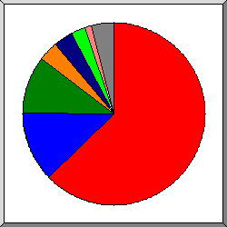
Поделено на сектора по количеству обращений к странице.
Safari
Mozilla
Firefox
{USER_AGENT}
Hello from Palo Alto Networks, find out more about our scans in https:
Netscape (compatible)
Scrapy
другое
Показано первые 20 браузеров - по количеству обращений к странице, отсортировано по количеству обращений к странице.
| N | запросы | страниц | браузер |
|---|---|---|---|
| 1 | 6091 | 369 | Safari |
| 5855 | 347 | Safari/537 | |
| 115 | 7 | Safari/604 | |
| 102 | 5 | Safari/605 | |
| 5 | 4 | Safari/534 | |
| 2 | 2 | Safari/532 | |
| 2 | 2 | Safari/533 | |
| 1 | 1 | Safari/312 | |
| 1 | 1 | Safari/535 | |
| 2 | 224 | 68 | Mozilla |
| 1 | 1 | Mozilla/2 | |
| 2 | 1 | Mozilla/1 | |
| 3 | 478 | 68 | Firefox |
| 18 | 14 | Firefox/125 | |
| 239 | 10 | Firefox/150 | |
| 19 | 9 | Firefox/120 | |
| 19 | 5 | Firefox/142 | |
| 31 | 5 | Firefox/147 | |
| 23 | 5 | Firefox/148 | |
| 7 | 3 | Firefox/124 | |
| 8 | 3 | Firefox/3 | |
| 21 | 2 | Firefox/149 | |
| 2 | 2 | Firefox/21 | |
| 4 | 26 | 26 | {USER_AGENT} |
| 5 | 47 | 19 | Hello from Palo Alto Networks, find out more about our scans in https: |
| 47 | 19 | Hello from Palo Alto Networks, find out more about our scans in https://docs-cortex | |
| 6 | 319 | 13 | Netscape (compatible) |
| 7 | 14 | 6 | Scrapy |
| 14 | 6 | Scrapy/2 | |
| 8 | 53 | 5 | okhttp |
| 53 | 5 | okhttp/5 | |
| 9 | 4 | 4 | RecordedFuture Global Inventory Crawler |
| 10 | 3 | 3 | MSIE |
| 1 | 1 | MSIE/9 | |
| 1 | 1 | MSIE/5 | |
| 1 | 1 | MSIE/7 | |
| 11 | 2 | 2 | Galeon |
| 2 | 2 | Galeon/1 | |
| 12 | 3 | 2 | Opera |
| 1 | 1 | Opera/8 | |
| 2 | 1 | Opera/9 | |
| 13 | 1 | 1 | Links |
| 1 | 1 | Links/0 | |
| 14 | 1 | 1 | Java |
| 1 | 1 | Java/1 | |
| 15 | 1 | 1 | Midori |
| 1 | 1 | Midori/0 | |
| 16 | 2 | 1 | Wget |
| 2 | 1 | Wget/1 | |
| 17 | 1 | 1 | Python-urllib |
| 1 | 1 | Python-urllib/3 | |
| 18 | 1 | 1 | msnbot-media |
| 1 | 1 | msnbot-media/1 | |
| 19 | 1 | 1 | w3m |
| 1 | 1 | w3m/0 | |
| 20 | 1 | 1 | P3P Validator |
| 17530 | 0 | [не распознано: 16 браузеров] |
(Переход: Вверх | Основная Информация | Статистика по месяцам | Статистика по дням недели | Статистика по времени суток | Статистика по доменам | Статистика по организациям | Статистика по перенаправляющим ссылкам | Статистика отказов по ссылкам | Статистика по ссылающимся сайтам | Статистика по браузерам (подробная) | Статистика по браузерам (суммарная) | Статистика по операционным системам | Статистика по коду возврата | Статистика по размерам файлов | Статистика по типам файлов | Статистика по директориям | Статистика по запросам)
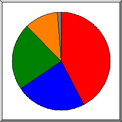
Поделено на сектора по количеству обращений к странице.
Windows
Unix
Неизвестная ОС
Macintosh
роботы
другое
Список операционных систем, отсортировано по количеству обращений к странице.
| N | запросы | страниц | ОС |
|---|---|---|---|
| 1 | 2493 | 257 | Windows |
| 2438 | 245 | Windows NT | |
| 52 | 11 | Неизвестная Windows-система | |
| 3 | 1 | Windows XP | |
| 2 | 1096 | 139 | Unix |
| 1088 | 135 | Linux | |
| 5 | 4 | BSD | |
| 3 | 0 | Другие Unix-системы | |
| 3 | 18172 | 130 | Неизвестная ОС |
| 4 | 3015 | 59 | Macintosh |
| 5 | 22 | 6 | роботы |
| 6 | 1 | 1 | Palm OS |
| 7 | 3 | 1 | Symbian OS |
| 8 | 1 | 0 | OS/2 |
(Переход: Вверх | Основная Информация | Статистика по месяцам | Статистика по дням недели | Статистика по времени суток | Статистика по доменам | Статистика по организациям | Статистика по перенаправляющим ссылкам | Статистика отказов по ссылкам | Статистика по ссылающимся сайтам | Статистика по браузерам (подробная) | Статистика по браузерам (суммарная) | Статистика по операционным системам | Статистика по коду возврата | Статистика по размерам файлов | Статистика по типам файлов | Статистика по директориям | Статистика по запросам)
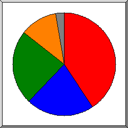
Поделено на сектора по количеству обращений.
200 OK
302 Document found elsewhere
304 Not modified since last retrieval
404 Document not found
другое
Список кодов возврата, отсортированный по порядковым номерам.
| запросы | код статус |
|---|---|
| 14873 | 200 OK |
| 9 | 204 OK, but nothing to send |
| 354 | 206 Partial content |
| 1 | 301 Document moved permanently |
| 7998 | 302 Document found elsewhere |
| 9590 | 304 Not modified since last retrieval |
| 7 | 3xx [Miscellaneous redirections] |
| 15 | 400 Bad request |
| 9 | 401 Authentication required |
| 26 | 403 Access forbidden |
| 3827 | 404 Document not found |
| 133 | 405 Method not allowed |
| 1 | 408 Request timeout |
| 3 | 413 Request too long |
| 104 | 415 Unsupported media type |
| 239 | 4xx [Miscellaneous client/user errors] |
| 93 | 500 Internal server error |
(Переход: Вверх | Основная Информация | Статистика по месяцам | Статистика по дням недели | Статистика по времени суток | Статистика по доменам | Статистика по организациям | Статистика по перенаправляющим ссылкам | Статистика отказов по ссылкам | Статистика по ссылающимся сайтам | Статистика по браузерам (подробная) | Статистика по браузерам (суммарная) | Статистика по операционным системам | Статистика по коду возврата | Статистика по размерам файлов | Статистика по типам файлов | Статистика по директориям | Статистика по запросам)
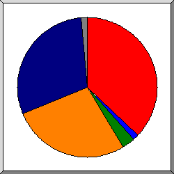
Поделено на сектора по количеству обращений.
0
11B- 100B
101B- 1kB
1kB- 10kB
10kB-100kB
10MB-100MB
другое
| размер | запросы | %байт |
|---|---|---|
| 0 | 9830 | |
| 1B- 10B | 0 | |
| 11B- 100B | 319 | |
| 101B- 1kB | 734 | 0,01% |
| 1kB- 10kB | 6740 | 0,35% |
| 10kB-100kB | 6817 | 4,85% |
| 100kB- 1MB | 100 | 0,37% |
| 1MB- 10MB | 34 | 2,68% |
| 10MB-100MB | 252 | 91,75% |
(Переход: Вверх | Основная Информация | Статистика по месяцам | Статистика по дням недели | Статистика по времени суток | Статистика по доменам | Статистика по организациям | Статистика по перенаправляющим ссылкам | Статистика отказов по ссылкам | Статистика по ссылающимся сайтам | Статистика по браузерам (подробная) | Статистика по браузерам (суммарная) | Статистика по операционным системам | Статистика по коду возврата | Статистика по размерам файлов | Статистика по типам файлов | Статистика по директориям | Статистика по запросам)
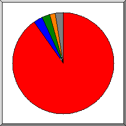
Поделено на сектора по суммарному трафику.
.mp4
.css [Cascading Style Sheets]
.js [JavaScript code]
.pptx
другое
Список расширений на которые приходиться, как минимум 0,1% трафика, отсортировано по суммарному трафику.
| запросы | %байт | расширение |
|---|---|---|
| 374 | 91,66% | .mp4 |
| 6549 | 2,35% | .css [Cascading Style Sheets] |
| 6566 | 2,03% | .js [JavaScript code] |
| 4 | 1,85% | .pptx |
| 11 | 0,86% | .docx |
| 8496 | 0,76% | [без расширения] |
| 4 | 0,26% | .pdf [Adobe Portable Document Format] |
| 585 | 0,11% | [директории] |
| 2237 | 0,11% | [не распознано: 36 расширений] |
(Переход: Вверх | Основная Информация | Статистика по месяцам | Статистика по дням недели | Статистика по времени суток | Статистика по доменам | Статистика по организациям | Статистика по перенаправляющим ссылкам | Статистика отказов по ссылкам | Статистика по ссылающимся сайтам | Статистика по браузерам (подробная) | Статистика по браузерам (суммарная) | Статистика по операционным системам | Статистика по коду возврата | Статистика по размерам файлов | Статистика по типам файлов | Статистика по директориям | Статистика по запросам)
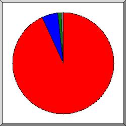
Поделено на сектора по суммарному трафику.
/storage/
/build/
другое
Список директорий на которые приходиться, как минимум 0,01% трафика, отсортировано по суммарному трафику.
| запросы | %байт | директория |
|---|---|---|
| 393 | 94,64% | /storage/ |
| 12907 | 4,19% | /build/ |
| 8756 | 0,77% | [корневой каталог] |
| 80 | 0,17% | /cPanel_magic_revision_1758823910/ |
| 432 | 0,04% | /home/ |
| 395 | 0,04% | /cgi-sys/ |
| 110 | 0,02% | /cPanel_magic_revision_1748449569/ |
| 80 | 0,02% | /.git/ |
| 225 | 0,01% | /cPanel_magic_revision_1460573724/ |
| 1448 | 0,11% | [не распознано: 91 директорий] |
(Переход: Вверх | Основная Информация | Статистика по месяцам | Статистика по дням недели | Статистика по времени суток | Статистика по доменам | Статистика по организациям | Статистика по перенаправляющим ссылкам | Статистика отказов по ссылкам | Статистика по ссылающимся сайтам | Статистика по браузерам (подробная) | Статистика по браузерам (суммарная) | Статистика по операционным системам | Статистика по коду возврата | Статистика по размерам файлов | Статистика по типам файлов | Статистика по директориям | Статистика по запросам)
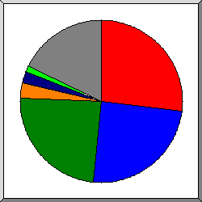
Поделено на сектора по количеству обращений.
/login
/build/assets/app-CiZ6hk-B.js
/build/assets/app-Bt4dxBOZ.css
/
/cgi-sys/suspendedpage.cgi
/robots.txt
/favicon.ico
другое
Список файлов на которые приходиться, как минимум 20 запросов, отсортировано по количеству обращений.
| запросы | %байт | последнее время | файл |
|---|---|---|---|
| 6924 | 0,59% | 31 мая 26 17:08 | /login |
| 6366 | 1,94% | 31 мая 26 17:08 | /build/assets/app-CiZ6hk-B.js |
| 6260 | 2,13% | 31 мая 26 17:08 | /build/assets/app-Bt4dxBOZ.css |
| 568 | 0,11% | 31 мая 26 15:39 | / |
| 395 | 0,04% | 20 мая 26 11:14 | /cgi-sys/suspendedpage.cgi |
| 315 | 31 мая 26 10:17 | /robots.txt | |
| 252 | 30 мая 26 15:29 | /favicon.ico | |
| 166 | 0,08% | 30 мая 26 08:06 | /build/assets/app-CiZ6hk-B.js.pagespeed.ce.vj7eJ8whWE.js |
| 150 | 0,01% | 28 апр 26 16:01 | /home |
| 132 | 23,30% | 19 апр 26 08:41 | /storage/videos/69Cv5lCm83c6JNqqDjkscsJnpPW6euiOud6SYM1D.mp4 |
| 111 | 0,04% | 30 мая 26 08:06 | /build/assets/A.app-Bt4dxBOZ.css.pagespeed.cf.sMYYIQVILj.css |
| 96 | 0,01% | 5 мая 26 17:06 | /oraliq-nazorat |
| 84 | 0,01% | 31 мая 26 15:39 | /cPanel_magic_revision_1460573724/unprotected/cpanel/images/webmail-logo.svg |
| 83 | 0,01% | 31 мая 26 15:39 | /cPanel_magic_revision_1748449569/unprotected/cpanel/fonts/open_sans/open_sans.min.css |
| 81 | 31 мая 26 15:39 | /cPanel_magic_revision_1739250472/unprotected/cpanel/images/notice-error.png | |
| 80 | 0,17% | 31 мая 26 15:39 | /cPanel_magic_revision_1758823910/unprotected/cpanel/style_v2_optimized.css |
| 79 | 31 мая 26 15:39 | /cPanel_magic_revision_1739250472/unprotected/cpanel/images/notice-success.png | |
| 78 | 31 мая 26 15:39 | /cPanel_magic_revision_1739250472/unprotected/cpanel/images/icon-username.png | |
| 78 | 31 мая 26 15:39 | /cPanel_magic_revision_1739250472/unprotected/cpanel/images/icon-password.png | |
| 77 | 31 мая 26 15:39 | /cPanel_magic_revision_1739250472/unprotected/cpanel/images/warning.png | |
| 77 | 31 мая 26 15:39 | /cPanel_magic_revision_1739250472/unprotected/cpanel/images/notice-info.png | |
| 73 | 0,01% | 30 мая 26 19:38 | /register |
| 72 | 0,01% | 13 мая 26 06:16 | /.git/config |
| 72 | 31 мая 26 15:39 | /cPanel_magic_revision_1739250472/unprotected/cpanel/images/icon-envelope.png | |
| 72 | 31 мая 26 15:39 | /cPanel_magic_revision_1739250472/unprotected/cpanel/images/login-error-close.png | |
| 71 | 31 мая 26 15:39 | /cPanel_magic_revision_1739250472/unprotected/cpanel/images/icon-token.png | |
| 71 | 31 мая 26 15:39 | /cPanel_magic_revision_1739250472/unprotected/cpanel/images/or-separator-line.png | |
| 71 | 31 мая 26 15:39 | /cPanel_magic_revision_1460573724/unprotected/cpanel/images/cp-logo.svg | |
| 70 | 31 мая 26 15:39 | /cPanel_magic_revision_1460573724/unprotected/cpanel/images/cp-logo_white.svg | |
| 66 | 34,92% | 20 мая 26 14:39 | /storage/videos/YxW2Bt7w1fZdV1AkptXsSbLjXnhQirbgybAIC7gj.mp4 |
| 56 | 3 мая 26 11:01 | /home/create | |
| 53 | 1 мая 26 16:19 | /resources | |
| 46 | 5 мая 26 17:05 | /yakuniy-nazorat | |
| 43 | 4 мая 26 14:50 | /home/26 | |
| 38 | 4,90% | 10 фев 26 08:44 | /storage/videos/Q20PXyT9hlvy90ngMJNzsEcO1KxvtmfaO6RJNWmh.mp4 |
| 37 | 4 мая 26 14:58 | /home/25 | |
| 34 | 19 апр 26 16:10 | /oraliq-nazorat/create | |
| 31 | 5 мая 26 17:04 | /yakuniy-nazorat/questions | |
| 28 | 22 мая 26 00:54 | /sitemap.xml | |
| 25 | 4 мая 26 00:41 | /home/27 | |
| 23 | 6,96% | 3 мая 26 11:42 | /storage/videos/Cg02ZtZzPjPXu9rxJ4AYiUDrXH1PM6Yb1UXZv3Xb.mp4 |
| 22 | 1,78% | 4 мая 26 00:41 | /storage/videos/c0rqtbvGIx8XJdwSXixYjtkQmQytAHOaOhQHpN4h.mp4 |
| 21 | 4 мая 26 14:50 | /home/28 | |
| 21 | 4 мая 26 14:50 | /home/29 | |
| 1258 | 22,95% | 30 мая 26 16:01 | [не распознано: 346 файлов] |